Caramel
Ajouter le fouet
Ajouter le fouet
Éplucher 4 aubergines, les couper en tranches fines et les cuire 10min au four à 200ºC sur une plaque.
Peler 1 aubergine, la couper dans la longueur en 8 tranches de 0,5cm et les cuire à la vapeur.
Couper 4 aubergines en fines tranches et les cuire à la vapeur.
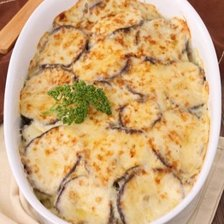
Mettre 40g de beurre en morceaux, 40g de farine, 500g de lait, 1/2 cac de sel, 2 pincées de poivre et 2 pincées de muscade dans le bol. Cuire 7 min/90ºC/vitesse 4.
Fondre 150g de chocolat au bain-marie et laisser refroidir.
Couper 300g de carottes en bâtonnets et émincer 200g de blancs de poireau dans la longueur. Mettre 50g de carottes et 50g de poireau dans le bol et hacher 5 sec/vitesse 5.
Râper 1 courgette sans la peler. Émincer très finement 1 oignon. Ciseler 1/2 bouquet de basilic et émietter 60g de feta.
Émincer finement 1 échalote et la rissoler dans 1/2 cas d'huile. Réserver.
Tremper 40g de pain en morceaux dans 80g de lait.
Mixer 1 des 2 oignons avec 1 oeuf, 1 gousse d'ail, 2 cas de persil, du sel et du poivre. Verser sur 600g de veau haché, ajouter 50g de chapelure et malaxer. Rectifier…
Mélanger 50cl de lait et 20cl de crème fraîche. Y presser 2 gousses d'ail et 1 échalote, puis ajouter du sel, du poivre et 1 cas d'herbes de Provence. Porter à frémissement en…
Couper 400g de filet de poulet en dés et mélanger avec 2 échalotes hachées, du sel et 1 cas de curry.
Mettre 130g de lait, 10g de levure boulangère sèche, 500g de farine T55, 4 œufs, 10g de sel et 50g de sucre dans le bol. Pétrir mode Pétrin/5 min.
Préparer la farce : 1 courgette râpée bien essorée, cumin, persil, sel, poivre, 100g de feta et 25g de gruyère râpé.
Couper en cubes de 1cm 1 chèvre en boîte, les enrouler dans 4 tranches de jambon serrano coupées en lanières. Griller 2min.
Fondre 200g de chocolat noir avec 130g de beurre.
Émincer 1 échalote et la laisser mijoter 2 à 3min dans une casserole avec 10cl de vin blanc.
Préparer le sirop : dans une casserole, verser 100g de sucre (sur 310g de sucre), 17cl d'eau et les graines d’une gousse sur 2 gousses de vanille. Porter à ébullition puis laisser…
Préchauffer le four à 170ºC. Mettre 100g de pistaches non salées dans le bol et pulvériser 6 sec/vitesse 10. Réserver.
Préchauffer le four à 180ºC.
Mélanger 3 oeufs avec 150g de sucre en poudre, puis 160g de farine, 1/3 sachet de levure et 150g de beurre demi-sel fondu.
Éplucher 200g de rhubarbe, la rincer et la couper en dés (si congelée, l’utiliser telle quelle).
Une base, plusieurs garnitures.
Porter à ébullition 25cl de lait avec 1 gousse de vanille et 25g de beurre.
Précuire 12 cannellonis ou feuilles de lasagnes 5min dans l’eau bouillante, 3 par 3.
Mettre 2 échalotes, 3 gousses d'ail et 30 feuilles de persil dans le bol et hacher 5 sec/vitesse 5.
Mélanger 500g de fromage blanc avec 3 cas de sucre et 1 sachet de sucre vanillé (ou extrait de vanille).
Rissoler 1 oignon émincé. Quand il est translucide, ajouter 2 pommes de terre pelées et coupées en tranches épaisses, couvrir d’eau et cuire à feu moyen jusqu’à évaporation. Étaler…
Préparer la garniture au choix : 200g d'épinards hachés, 100g de chèvre frais et ail ; ou 1/2 chorizo et 1 tomate en petits dés, 1 boule de mozzarella et origan ; ou 150g de chèvre…
Mettre 300g de poivron rouge ou vert en morceaux, 100g d'oignon coupé en 2 et 1 gousse d'ail dans le bol, mixer 5 sec/vitesse 5.
Hacher 1 oignon et 1 gousse d'ail, puis les fondre dans un peu d’huile dans une cocotte.
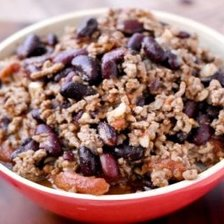
Couper en lamelles 2 poivrons et émincer 1 oignon. Les rissoler dans 20g de beurre avec 2 gousses d'ail.

Préchauffer le four à 180ºC.
Mettre 40g d'échalotes et 1/2 gousse d'ail dans le bol et hacher 5 sec/vitesse 5. Ajouter la moitié de 40g de beurre et rissoler 4 min/120ºC/vitesse mijotage, sans le gobelet.
Mariner 4 à 5h 4 cuisses de poulet avec 1 des 2 oignons coupé en dés, la moitié des 2 cac de poudre à colombo, du quatre-épices, du sel, du poivre et le jus d’1 citron.
Mélanger 80g de farine, 40g de parmesan râpé, 1 cac de levure et sel. Ajouter 1 œuf puis 40g de beurre. Former une boule.
Mélanger 110g de beurre mou, 60g de cassonade, 60g de sucre en poudre et 1/2 cac de vanille liquide.
Sur chacune des 4 fines escalopes de dinde, étaler un peu de sauce tomate en tube, puis ajouter du basilic, une des 4 tranches de gruyère et des tranches de mozzarella. Plier en…
Fondre 80g de beurre et 100g de chocolat noir au micro-ondes, puis fouetter jusqu’à obtenir un appareil lisse et brillant.
Dérouler 1 pâte feuilletée et la piquer. Poser un bol au centre et étaler du pesto autour, sans toucher le bol ni les bords.
Dans la cocotte-minute, rissoler 3 cuisses de poulet coupées en deux, 6 merguez et 6 boulettes dans 3 cas des 15cl d'huile d'olive. Ajouter 1 oignon et 2 gousses d'ail, puis…
Fendre 1 gousse de vanille et la couper en deux. La mettre dans le bol avec un tiers de 600g de sucre roux (200g) et mixer 30 sec/vitesse 10.
Porter à ébullition 1/2L de lait avec de la vanille.
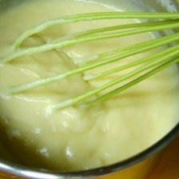
Préparer un caramel avec 100g de sucre et 2 à 3 cas d'eau et en napper le fond des cocottes (ou utiliser du caramel au beurre salé).
Dans un saladier, mettre 250g de farine, 1 pincée de sel et éventuellement 1 cas de sucre.
Décortiquer et déveiner 500g de crevettes.
Fondre la moitié de 60g de parmesan avec 20cl de crème liquide entière à feu doux. Saler (sel), poivrer (poivre) et laisser tiédir, puis mélanger avec 3 oeufs.
Couper 1/2 poivron en lamelles et le cuire 15min à la vapeur ou à l’eau bouillante.
Tremper 40g de pain de mie émietté dans 30g de lait 5min.
Émincer 1 oignon, 3 poireaux et 250g de champignons de Paris. Hacher 2 gousses d'ail.
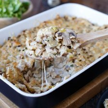
Ramollir 125g de beurre au micro-ondes, le couper en morceaux et le mélanger avec 150g de sucre, 125g de farine et 200g de poudre d'amande jusqu’à obtenir un mélange homogène.
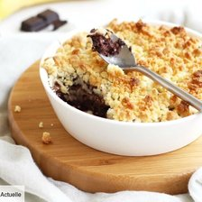
Laver 3 courgettes et les éplucher en laissant une bande de peau sur deux. Les couper en rondelles et les laisser dégorger 3h.
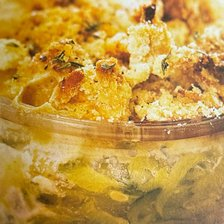
Chauffer un peu d’huile dans un faitout. Ajouter 1 oignon et 4 courgettes en fines rondelles. Quand ils commencent à dorer, ajouter 100g de lardons ou chorizo et laisser mijoter 15…
Éplucher et couper en petits morceaux les fruits (3 poires, 1 banane), puis les répartir dans le plat. Parsemer de 100g de chocolat blanc en morceaux.
Pour 3 personnes ou 4 mini cocottes.
Émincer 2 échalotes et les blondir dans une des 2 noisettes de beurre. Ajouter 100g d'épinards surgelés, du sel et du poivre, et cuire environ 8min en remuant. Égoutter.
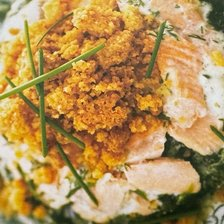
Ciseler 3 branches de cerfeuil et émincer 3 blancs de poireaux en fines rondelles. Les cuire 15min à feu doux, à couvert, dans 3 des 4 cas d'huile d'olive avec la moitié du…
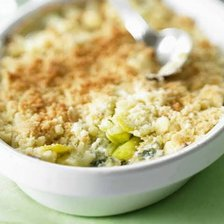
Émincer 2 échalotes. Monder 9 tomates moyennes (30 sec dans l’eau bouillante), les peler et les couper en morceaux.
Rincer 300g de lentilles corail. Ciseler 2 oignons jaunes. Peler, dégermer et presser 2 gousses d'ail.
Mettre 1 oignon, 2 gousses d'ail, 2cm de gingembre frais et les deux tiers d’1 piment rouge thaï épépiné dans le bol. Mixer 7 sec/vitesse 5.
Tzatziki : mélanger 250g de yaourt, 1 cas d'épices, 1 cas d'huile d'olive, un peu de vinaigre et 1 concombre râpé.
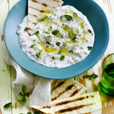
Préchauffer le four à 160ºC. Mettre 1 petit oignon en quartiers, 1 poivron rouge épluché en dés et 2 tomates en quartiers dans le bol. Mixer 5 sec/vitesse 4.
Préchauffer le four à 180ºC.
Émincer 1 oignon et le rissoler au beurre dans une sauteuse. Le retirer.
Égoutter 6 à 8 tomates séchées en gardant leur huile. Ciseler du basilic et émincer finement 1 gousse d'ail. Mélanger le tout et ajouter du poivre.
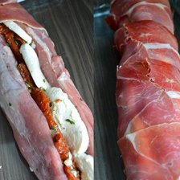
Décongeler 100g de morilles surgelées en récupérant l’eau de végétation. Assaisonner 2 filets mignons de sel et de poivre.
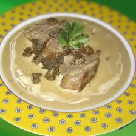
Tremper 1 filet mignon coupé en cubes dans 1 blanc d'oeuf, puis l’enrober de graines de sésame.
Préchauffer le four à 180ºC. Beurrer des moules à financiers.
Préchauffer le four à 180ºC. Beurrer des moules à financiers.
Battre 4 oeufs et les mélanger avec 1 boîte de lait concentré sucré et la même dose de lait.
Mettre 800g de lait et 2 gousses de vanille fendues et grattées dans le bol, chauffer 8 min/90ºC/vitesse 1. Transvaser et retirer les gousses.
Porter à ébullition 1L de lait avec 1 gousse de vanille fendue.
Préchauffer le four à 190ºC. Tapisser un moule de 20cm de papier cuisson.
Couper 800g de poireaux en tronçons. En hacher la moitié 5 sec/vitesse 5, réserver, puis hacher le reste de la même façon.
Préchauffer le four à 180ºC. Mettre 125g de beurre mou et 125g de sucre dans le bol, mixer 30 sec/vitesse 4.
Ramollir 120g de beurre au micro-ondes. Ajouter 120g de sucre et fouetter jusqu’à ce que ce soit mousseux.
Mettre 150g de gruyère dans le bol et râper 10 sec/vitesse 10. Réserver et rincer le bol.
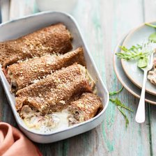
Râper 150g de courgettes et 300g de pommes de terre.
Pour 8 petites galettes.
Couper grossièrement et mixer ensemble 1 grosse boîte de tomates, 1/2 poivron vert, 1/2 concombre, 1 échalote, 1 gousse d'ail, 2 cas d'huile d'olive, 1/2 cac de vinaigre…
Séparer les blancs des jaunes de 4 oeufs. Battre les jaunes avec 125g de sucre.
Séparer les blancs des jaunes de 3 oeufs. Monter les blancs en neige.
Préchauffer le four à 150ºC. Mettre 65g de jus de citron, 65g de sucre et 65g d'eau dans le bol, cuire le sirop 5 min/100ºC/vitesse 1. Réserver.
Préchauffer le four à 180ºC. Mélanger 2 oeufs, 20cl de crème fraîche épaisse et 20cl de lait. Ajouter 1 cas de persil ou cerfeuil ciselé, du sel et du poivre.
Mélanger 150g de farine et 1 cac de levure avec 15cl de lait tiède.
Préchauffer le four à 180ºC. Beurrer un moule à manqué avec 20g de beurre.
Fouetter 2 oeufs. Ajouter 100g de beurre doux fondu et 25cl de lait demi-écrémé, puis 250g de farine et 1 sachet de levure chimique. Bien mélanger pour éviter les grumeaux.
Couper 1 pâte feuilletée en 4 et tartiner de Saint Moret (ou moutarde).

Battre 2 oeufs, ajouter 25cl de lait et 75g de beurre fondu, puis mélanger. Assaisonner de sel et poivre.
Couper en petits dés 6 tomates séchées, 125g de mozzarella égouttée et du chorizo ou bacon.
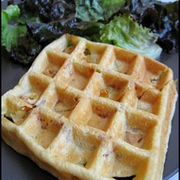
Séparer les blancs des jaunes de 2 œufs. Monter les blancs en neige.
Émincer 1 oignon et 2 gousses d'ail, puis les rissoler dans un filet d’huile d'olive.
Éplucher 1kg de pommes de terre (bintje) et les cuire à l’eau. Les passer au moulin à légumes et incorporer 50g de beurre en petits morceaux.
Chauffer 250ml d'eau avec 100g de beurre, sel et poivre. Hors du feu, ajouter 150g de farine.
Mélanger 3 mugs de flocons d'avoine, 4 cas de cacao, 3 cas de noix de coco, 1 cas de sésame et quelques amandes.
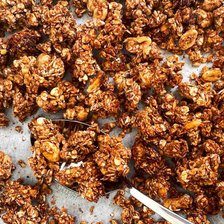
Pour 2 bocaux.
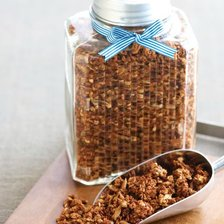
Détailler 1 chou-fleur en bouquets. Éplucher 4 pommes de terre et les trancher en rondelles de 0,5cm. Cuire le tout 5min à l’autocuiseur.
Laver et couper en rondelles 1kg de courgettes. Les blanchir 6 à 7min à l’eau bouillante salée et les égoutter encore croquantes.
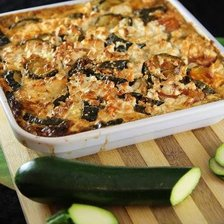
Hacher 1 gousse d'ail 5 sec/vitesse 5.
Mettre 50g de comté en cubes dans le bol et râper 5 sec/vitesse 6. Réserver.
Cuire al dente 200g de pâtes et 1 brocoli. Rissoler 2 barquettes de lardons avec 1 oignon émincé.
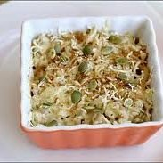
Laver 8 poireaux et raccourcir le vert. Les cuire 15min à l’eau bouillante salée, égoutter et les presser pour extraire l’eau.
Mettre 100g de comté dans le bol et râper 10 sec/vitesse 10. Réserver.
Mettre 50g de comté dans le bol et râper 10 sec/vitesse 10. Réserver.
Mettre 1.2kg de pommes de terre en rondelles, 300g de lait, 300g de fromage frais type Vache qui rit, 1/2 cac de muscade, 2 pincées de sel et 2 pincées de poivre dans le bol. Cuire…
Mettre 8 grosses quenelles fraîches dans un plat à gratin. Parsemer de 200g de champignons et 4 tranches de jambon émincés en fines lamelles.
Couper en petits dés 1 courgette. Cuire 200g de quinoa.
Mettre 200g de tomates en quartiers et 3 à 4 brins de coriandre dans le bol, mixer 15 sec/vitesse 5.
Rissoler 2 oignons hachés et 2 gousses d'ail mixées dans un bon morceau de beurre.
Mélanger 300g de filets de poulet en cubes avec 2 cas d'épices cajun. Mettre dans le Varoma avec 200g de crevettes crues décortiquées.
Épépiner 1 poivron rouge et le couper en carrés. Émincer 1 oignon et 1 gousse d'ail. Couper 200g de chorizo en rondelles et 350g de poulet en morceaux.
Mettre 200g de légumes en morceaux (carottes, oignons) et 40g d'huile d'olive dans le bol, mixer 5 sec/vitesse 7. Remplacer le gobelet par le panier cuisson sur le couvercle et…

Rissoler 1 oignon émincé et 600g de viande hachée.
Beurrer un plat. Alterner 2 à 3 fois plaques de lasagnes, 800g d'épinards, 400g de bûche de chèvre émiettée, béchamel (50cl de lait), sel et poivre. Finir par la béchamel et…
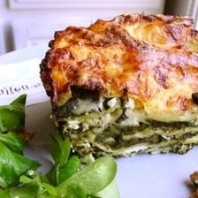
Laver et couper 2 courgettes. Les rissoler avec 1 cac d’huile d'olive et 1 gousse d'ail, sel et poivre. Cuire 15min à feu doux.
Passer 2 filets de saumon moins d’1min au micro-ondes et les émietter.
Éplucher et émincer 2 oignons, les rissoler. Ajouter 1 grosse boîte de tomates, 2 gousses d'ail, des herbes de Provence, sel, poivre et une pincée de sucre. Laisser mijoter.
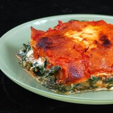
Ramollir 2 feuilles de gélatine dans l’eau froide.
Battre 4 œufs avec 150g de sucre et de la vanille pendant 10min.
Fouetter 125g de beurre mou et 170g de sucre au batteur jusqu’à ce que le mélange blanchisse et devienne mousseux.
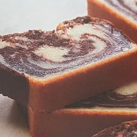
Fouetter 3 oeufs avec 125g de sucre jusqu’à blanchiment. Ajouter 125g de beurre fondu, puis 125g de farine tamisée avec 1 sachet de levure chimique.
Mariner 4 escalopes de poulet avec 2 cas d'huile d'olive, de l’ail râpé, 80ml de miel, 3 cas de moutarde à l'ancienne et 3 cas de moutarde.
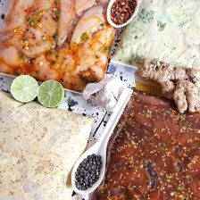
Écraser 40g de beurre mou avec 400g de ricotta, sel, poivre et 1 pincée d'herbes de Provence.
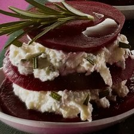
Mélanger 40g de farine et 1/2 sachet de levure, puis ajouter 1 œuf. Verser 2 cas d'huile et fouetter vivement.
Pour 16 muffins.
Tremper 200g de lentilles corail 1h dans 500g d'eau. Couper 400g d'aubergines en tranches de 1cm et les répartir dans le Varoma et sur le plateau vapeur, en laissant passer la…
Couper en rondelles 3 aubergines et 2 courgettes. Éplucher et émincer 3 oignons.
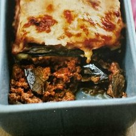
Fondre 200g de chocolat.
Mettre dans le bol 150g d'eau minérale, 150g de lait, 15g de levure boulangère fraîche, 430g de farine T45, 70g de semoule fine (+ 2 cas pour plus tard), 15g de sucre et 10g de…
Préchauffer le four à 180ºC. Mettre 100g de chocolat au lait dans le bol et râper 5 sec/vitesse 6. Réserver.
Préchauffer le four à 180ºC. Beurrer une plaque à muffins.
Préchauffer le four à 180ºC. Disposer des moules à muffins sur une plaque.
Cuire 100g de quinoa.
Mélanger 175g de farine, 1/2 sachet de levure et 100g de sucre roux.
Mettre 150g d'eau et 10g de levure boulangère sèche dans le bol, chauffer 1 min/50ºC/vitesse 1.
Mixer 2 gousses d'ail, le blanc de 2 oignons nouveaux (réserver le vert) et 15g de gingembre frais 5 sec/vitesse 5.
Mélanger 300g d'eau tiède (37ºC), 5g de levure instantanée, 75g de farine de seigle T110 ou T150, 100g de farine d'épeautre T65, 200g de farine T55 ou T65, 8g de sel et 15g d'huile…
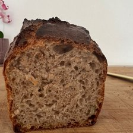
Retirer la croûte de 8 tranches de pain (ou pain de mie).
Battre 1 oeuf avec 4 cas de lait et 1 sachet de sucre vanillé. Y tremper des tranches de brioche ou pain.
Tamiser 120g de farine avec 1 cac de levure chimique. Sabler avec 90g de beurre ramolli.
Étaler la garniture sur 1 rouleau de pâte feuilletée : Saint Moret, 3 tranches de jambon et ciboulette.
Mélanger 250g de farine, 1 sachet de levure et 30g de sucre. Ajouter 2 œufs et mélanger.
Ramollir 3 feuilles de gélatine dans un bol d’eau froide.
Mélanger 4 cas de crème fraîche, 4 cac de moutarde et du paprika.
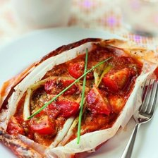
Pour chaque papillote, poser 1 pavé de saumon sur une feuille de papier cuisson. Ajouter du sel et du poivre.
Préchauffer le four à 200ºC.
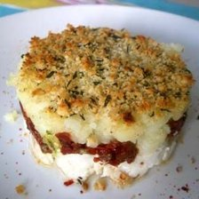
Couper 10 pommes de terre en gros cubes et les cuire 20min à l’eau bouillante.
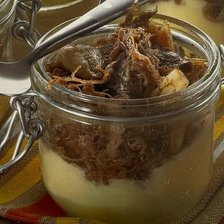
Mettre 500g d'eau dans le bol, 300g de pommes de terre farineuses dans le panier et 1 chou-fleur (1kg) en bouquets dans le Varoma. Cuire à la vapeur 30 min/Varoma/vitesse 1.
Mettre 550g d'eau et 15g de gros sel dans le bol, 600g de pommes de terre en morceaux dans le panier et 300g de filets de poisson blanc (cabillaud) dans le Varoma. Cuire à la…
Sabler 200g de farine avec 3 cas de sucre, 100g de beurre en morceaux et 1 pincée de sel.
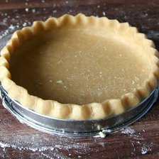
Mixer 240g de farine de sarrasin, 1 oeuf, 1 à 1,5 cac de sel et 180g de lait 1 min/vitesse 3.
Battre 1 oeuf à la fourchette avec 1 pincée de sel et 100g de sucre en poudre jusqu’à ce que ce soit mousseux.
Chauffer 50cl de bouillon de volaille. Dans une autre casserole, rissoler quelques minutes 100g de lardons, 1 échalote hachée et 320g de coquillettes.
Mixer 1 gousse d'ail dégermée et 30g de parmesan en dés Turbo/2 sec, racler, puis à nouveau Turbo/2 sec.
Pétrir 350g de farine, 200g d'eau, 20g de levure boulangère fraîche, 1 cac de sel, 25g d'huile d'olive et 1 pincée de sucre Pétrin/2 min.
Pour 3 petites pizzas.
Trois variantes au choix : lardons, jambon-crème ou tomate-mozzarella.
À préparer la veille.
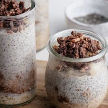
Dorer 2 blancs de poulet coupés en lanières 5 à 6min dans un peu de beurre. Ajouter du sel et du poivre. Réserver au chaud.
Éplucher et émincer 500g de champignons de Paris. Couper 10 tranches de bacon en carrés de 1cm.
Dorer 4 escalopes de poulet en morceaux dans de l’huile d'arachide. Ajouter 1 oignon émincé très fin, 1 gousse d'ail, 1 tomate en petits morceaux, du persil, 1 cas de curcuma, 1…
Chauffer 2 cas d'huile d'olive à feu vif dans la cocotte-minute et colorer 4 blancs de poulet. Ajouter 3 cas de miel et 3 pincées de cannelle, laisser caraméliser puis déglacer…
Émincer 2 échalotes et les dorer dans un peu des 2 cas d'huile. Réserver.
Concasser 80g de noisettes 30 sec/vitesse 8. Réserver.
Mettre 1kg de pommes de terre en rondelles de 0,5cm, 1 cac de sel et 350g de lait dans le bol. Cuire 35 min/95ºC/vitesse 1 sans le gobelet doseur.
Battre 4 œufs, ajouter 250g de farine, 250g de sucre, puis 250g de beurre fondu, 1 sachet de levure et 1 sachet de sucre vanillé.
Dans une casserole, fondre ensemble 150g d'eau, 150g de lait, 60g des 80g de beurre, 1/2 cac de sel, du poivre et 180g de comté râpé en remuant à la cuillère en bois. Ajouter 200g…
Mélanger 400g de brousse et 20cl de crème fraîche. Ajouter 4 oeufs, 1 bouquet de menthe ciselée, du sel et du poivre.
Cuire 500g d'épinards s’ils sont frais.
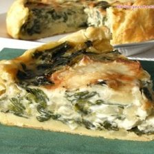
Mixer 200g de farine, 80g des 110g d'huile d'olive, 60g d'eau froide et 1/2 cac du 1,5 cac de sel 25 sec/vitesse 5.
Couper 8 poireaux moyens en tronçons de 1 à 2cm. Les chauffer dans 20g de beurre avec 1 pincée de quatre-épices, du sel et du poivre. Couvrir et étuver 30min à feu doux : ils…
Quiche sans pâte.
Râper 80g d'emmental 5 sec/vitesse 10. Réserver.
Déposer 1 pâte brisée dans un moule et la cuire à blanc 10min.
Fouetter 4 oeufs avec 25cl de crème fraîche, 150g de chèvre frais, 100g d'épinards en branches décongelés, du sel, du poivre et de la muscade.
Battre 3 oeufs avec du sel et du poivre. Incorporer 30cl de crème fraîche, puis 1 grosse boîte de thon émietté, 100g de fromage râpé, une pointe de muscade et éventuellement du…
Mixer 120g d'oignons, 2 gousses d'ail et 20g d'huile d'olive 4 sec/vitesse 5. Rissoler 5 min/120ºC/sens inverse/vitesse mijotage.
Pour un bocal.
Hacher 65g d'oignon 5 sec/vitesse 5. Ajouter 15g d'huile d'olive et rissoler 4 min/120ºC/vitesse 1, sans le gobelet.
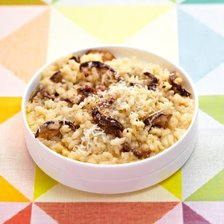
Couper en petits dés 2 courgettes et les cuire 15min avec 15g de beurre jusqu’à ce qu’elles soient tendres. Ajouter 1 cas de persil et 1 cas de menthe en fin de cuisson. Réserver.
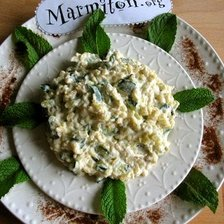
Dans une grande casserole, verser 1L de lait, 100g de sucre et 1 gousse de vanille fendue (ou du sucre vanillé). Porter à ébullition.
Mettre 100g d'oignon coupé en 2 et 1 gousse d'ail dans le bol, puis hacher 5 sec/vitesse 5.
Mettre 500g de saucisses fumées précuites dans le panier et 1L d'eau dans le bol. Cuire 12 min/Varoma/vitesse 4. Vider le bol.
Aplatir 4 blancs de poulet et les assaisonner. Garnir chacun de tranches d’1 boule de mozzarella, de tomates séchées en dés et de basilic.
Bien égoutter 1 boîte d'épinards en branches et les battre en omelette avec 5 œufs, sel et poivre. Étaler sur une plaque à pâtisserie.
Fouetter 1 cas de Boursin avec 60ml de crème, 12ml de lait et du poivre.
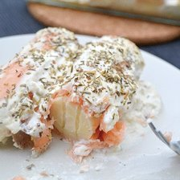
Mettre les graines d’1 gousse de vanille, 150g de beurre mou en morceaux et 100g de sucre dans le bol. Mélanger 30 sec/vitesse 4.
Mélanger 150g de farine, 30g de parmesan et 50g de basilic haché.
Mélanger 150g de farine et 60g de sucre, ajouter 1 jaune d'œuf puis 60g de beurre. Pétrir et ajouter de la vanille.

Mettre de l’eau dans le bol. Mettre 400g de pommes de terre en dés dans le Varoma avec du sel. Cuire à la vapeur 20 min/Varoma/vitesse spatule.
Cuire 600g de pommes de terre et les couper en rondelles une fois froides.
Couper 1 aubergine en cubes et la rôtir 10min au four avec un filet d’huile d'olive.
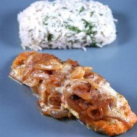
Émincer très finement 2 échalotes et les rissoler dans 20g de beurre. Dès qu’elles suent, baisser le feu et ajouter 2 cac de sirop de sucre de canne puis 1 sachet de sucre vanillé.
Mettre 4 oeufs, 60g de farine, 300g de lait, 50g de beurre, de la muscade, sel et poivre dans le bol. Chauffer 3 min/90ºC/vitesse 3.
Hacher 80g d'oignon, 1 gousse d'ail et 200g de blancs de poireau 5 sec/vitesse 5. Ajouter 20g de beurre et rissoler 7 min/100ºC/vitesse 1.
Hacher 20-25g de persil 4 sec/vitesse 6. Réserver 1 cac pour la finition. Ajouter 100g d'oignon et hacher 5 sec/vitesse 5.
Éplucher et hacher grossièrement 1 oignon. Le rissoler 5min dans 1 cas d'huile avec 2 cac de curry.
Dorer 100g d'oignon avec 30g de beurre 7 min/120ºC/sens inverse/vitesse 1, sans le gobelet.
Chauffer de la crème fraîche dans une casserole. Couper quelques tranches de chorizo en lamelles et les laisser infuser dans la crème.
Éplucher 1 pomme golden ou gala et la couper en petits cubes. Les cuire dans une poêle chaude avec 20g de beurre, en ajoutant un peu d’eau si besoin, jusqu’à ce qu’ils soient…
Mélanger 50g d'eau, 300g de semoule moyenne, 30g d'huile d'olive, 4 cas de jus de citron, 1 cac de sel et 2 pincées de poivre 15 sec/sens inverse/vitesse 3.5. Réserver dans un…
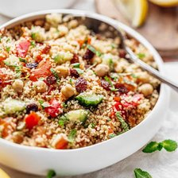
Couper en dés 4 blancs de poulet, 2 poivrons, 2 blocs de feta et 2 à 3 tomates.
Monder 700g de tomates : 30 sec dans l’eau bouillante, puis sous l’eau froide, et retirer la peau. Les couper en quatre et les épépiner.
Hacher 1 gousse d'ail 3 sec/vitesse 5.
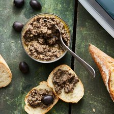
Étaler 1 pâte brisée dans le moule.
Pulvériser 65g de sucre 15 sec/vitesse 9. Ajouter 100g de beurre mou, 20g d'amandes en poudre et 1 pincée de sel, mélanger 1 min/vitesse 3.
Déposer 1 pâte feuilletée ou brisée dans un moule avec son papier de cuisson.
Diviser 750g de brocolis en bouquets et les cuire 10min à l’eau bouillante (ou 5min au micro-ondes à 600W, couverts, avec un peu d’eau).
Préchauffer le four à 200ºC et précuire 1 pâte brisée 15min.
Piquer 1 pâte brisée et la précuire environ 10min à 200ºC.
Émincer 1 oignon et couper 2 courgettes en fines rondelles. Les cuire jusqu’à tendreté dans un peu d’huile d'olive, avec du sel et du poivre.
Fondre 80g de beurre demi-sel 4 min/60ºC/vitesse 1. Ajouter 250g de speculoos et mixer 10 sec/vitesse 4.
La veille, préchauffer le four à 180ºC (th. 6). Mixer 250g de speculoos avec 75g de beurre mou en une pâte granuleuse.
Mélanger 1 cas bombée de moutarde avec 1 cas de concentré de tomate, un peu d’huile d'olive et de basilic. Ajouter du sel et du poivre.
Foncer le moule avec 1 pâte sablée et la piquer à la fourchette.
Peler 1kg d'oignons et les couper en rondelles. Les fondre dans du beurre sans coloration, avec du sel et du poivre.
Mélanger 2 oeufs, 20cl de crème fraîche et 100g de sucre.
Préchauffer le four à 200ºC. Étaler 1 pâte brisée dans un moule, la piquer et la précuire 10 à 15min.
Mélanger du Saint Moret avec 200g de thon, 1 échalote hachée, le jus d’1 citron et de la ciboulette.
Monder 12 à 14 tomates : les plonger 30sec dans l’eau bouillante, les éplucher, les couper en deux et les épépiner.
Couper en rondelles de 5mm 3 courgettes, 2 aubergines, 4 tomates et 2 mozzarellas.
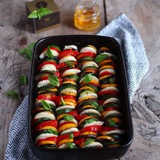
Insérer le fouet. Fouetter 2 oeufs, 1 jaune d'oeuf et 130g de sucre 6 min/vitesse 4. Retirer le fouet, ajouter 500g de mascarpone et mélanger 2 min/vitesse 3.
Séparer les blancs des jaunes de 3 oeufs. Fouetter les jaunes avec 2 cas de 100g de sucre et 1 sachet de sucre vanillé jusqu’à blanchiment. Monter les blancs en neige.
Découper des ronds dans 1 pâte à pizza. Placer un cube de 200g de cheddar (20 cubes) au centre et fermer en boulette.
Lavash au saumon : mélanger 1 fromage frais, 125g de fromage blanc, aneth, ciboulette, le jus d’1 citron vert, sel et poivre.
Rissoler 250g de lardons et 60g de champignons. Couper le chapeau de 12 tomates et les évider.
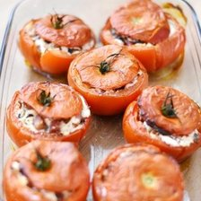
Peler 500g de pommes de terre et les couper en rondelles. Les rincer à l’eau froide et les égoutter. Épépiner 1 poivron rouge et le couper en petits morceaux.
Éplucher 1 courgette une bande sur deux et la couper en morceaux. Couper en deux 15 tomates cerise et émincer 1 échalote.
Cuire 800g de pommes de terre sans trop les cuire. Couper 400g de saint-nectaire en petits rectangles.
Battre 2 blancs d'œufs, puis ajouter 1 œuf entier, 50g de sucre et 35g de farine.
Hacher 110g d'échalotes 7 sec/vitesse 5. Ajouter 30g d'huile d'arachide, 1/2 à 1 cac de gingembre en poudre et 900g de carottes en morceaux. Rissoler 6 min 30/120ºC/vitesse 1, sans…
Hacher 50g d'oignon et 1 gousse d'ail 3 sec/vitesse 5.
Chauffer 150g de lait avec de la noix de coco râpée 5 min/95ºC/vitesse 1.
Plusieurs idées de verrines froides.
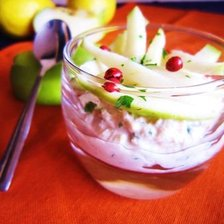
Alterner dans des verrines 1/2 banane en rondelles, quelques fraises et speculoos émiettés.
Mélanger 120g de yaourt nature, 800g de lait entier et 40g de sucre 30 sec/vitesse 4, puis chauffer Réchauffage/37ºC/vitesse 1.
Mettre 900g de lait entier et 1/2 gousse de vanille fendue dans le bol. Chauffer 10 min/80ºC/vitesse 1, puis laisser refroidir jusqu’à 37ºC.